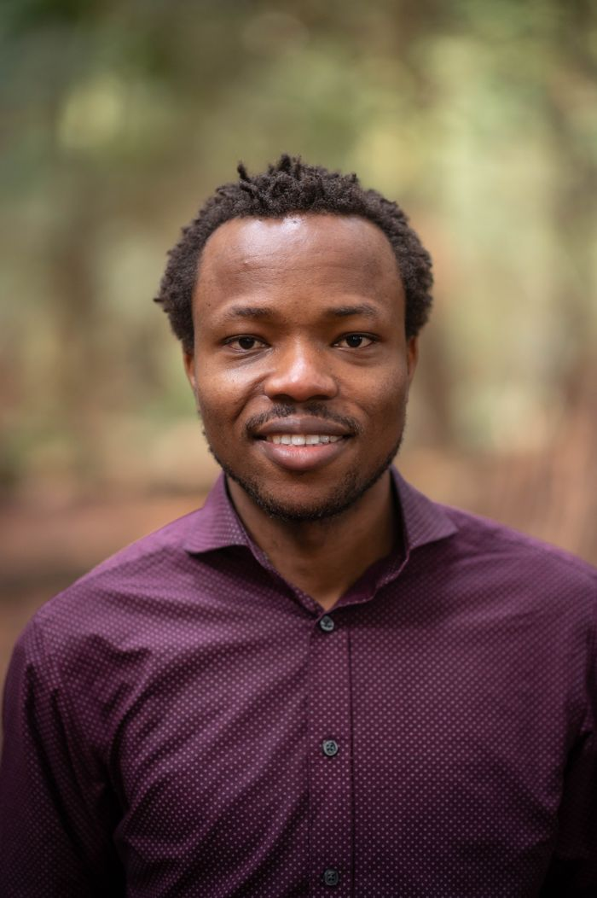

Dr. Samuel Adeyanju
Vanier Scholar Killam Scholar Mastercard Foundation Scholar
I study whether conservation and climate programs deliver for the communities they are meant to benefit.
I am a human-environment social scientist working at the intersection of conservation, rural livelihoods, women's empowerment, and agroforestry value chains in West Africa. My current research examines the human dimensions of natural climate solutions, including how carbon market social safeguards work in practice. I hold a PhD and MSc in Forestry from the University of British Columbia, where I was a Vanier Scholar, and I have more than eight years of research on Ghana and Nigeria.
Now
Current research
Latest
Recent publications
- Adeyanju, S. O., Pienaah, C. K. A., Bulkan, J., Ros-Tonen, M., & Sunderland, T. C. (2026). Environmental, economic, and sociocultural outcomes of Community Resource Management Areas (CREMA) in Ghana: A systematic review. Frontiers in Forests and Global Change. DOI
- Adeyanju, S., Ros-Tonen, M. A. F., Bulkan, J., Baatuuwie, B. N., & Sunderland, T. (2026). Evaluating socioeconomic and equity outcomes in livelihood interventions. Current Research in Environmental Sustainability. DOI
- Adeyanju, S., O'Connor, A., & Pienaah, C. K. A. (2026). Community conservation in Ghana has evolved, but policy and funding need to catch up. The Conversation. Link
Contact
Get in touch
I welcome conversations about research collaboration, impact evaluation, and safeguards work with conservation and climate organizations.